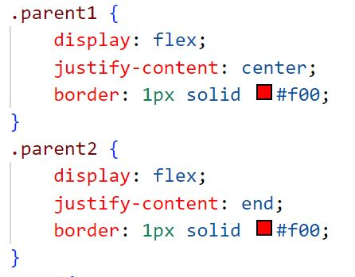

Flex는 부모요소에 설정한다.
상위요소에 Flex를 설정하고 justify-content: center 로 지정하고 justify-content: end로 지정하여도 부모 요소는 block이므로 위치상 아래로 온다

상위요소에 Flex를 설정하고 justify-content: center 로 지정하면 하위요소는 모두 가운데로 지정된다
부모요소에 text-align: center 를 설정하고 child1 요소에는 display: inline-block 로 지정하고 child2요소는 float: right 설정한다.